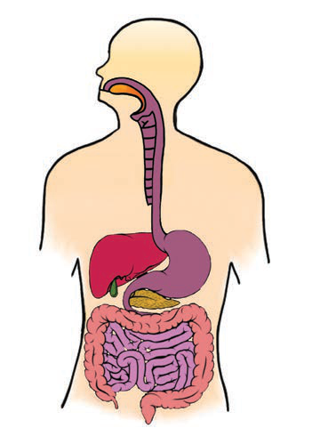

- Mouth cavity
- Pharynx
- Oesophagus
- Liver
- Stomach
- Gallbladder
- Pancreas
- Large intestine
- Small intestine
- Rectum
- Anus
Mouth cavity
The digestion process starts in the mouth cavity, where food is chewed using teeth and mixed with saliva. The digestion of foods rich in starch begins in the mouth cavity and are thereafter transported through the oesophagus into the stomach.
Pharynx
The pharynx is the part of the digestive system located between the mouth and the oesophagus. Its function is to direct food from the mouth cavity to the oesophagus. A flap called epiglottis prevents food from entering the airway by closing the windpipe during swallowing.
Oesophagus
The oesophagus is a muscular tube that connects the pharynx to the upper part of the stomach. Food moves through the oesophagus in a series of muscle contractions and relaxations in the walls. This movement helps to move food to the stomach.
Stomach
Upon reaching the stomach, food is broken down with the help of acid and digestive enzymes, which are produced there. The acid and enzymes